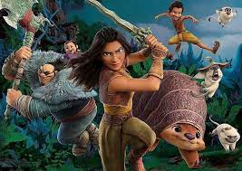

Raya and the Last Dragon
Në një mbretëri të quajtur Kumandra, një Tokë e rimagjinuar si
e banuar nga një qytetërim antik, luftëtarja Raya është shumë
e vendosur për të gjetur dragoin e fundit.
Titulli origjinal: Raya and the Last Dragon
Filmi fillon: 22.04.2021
Zgjatja e filmit: 93 Minuta
Shteti/Viti: USA/2021
Lloji: Animacion, Aksion, Aventure
Aktorë:
Regjisori: Don Hall, Carlos López Estrada
Distributori: MCF MKD
Vlerësim: Të gjitha moshat
PËRMBAJTJA
Në një mbretëri të quajtur Kumandra, një Tokë e rimagjinuar si
e banuar nga një qytetërim antik, luftëtarja Raya është shumë
e vendosur për të gjetur dragoin e fundit.
Zgjedh Orarin: 12:45